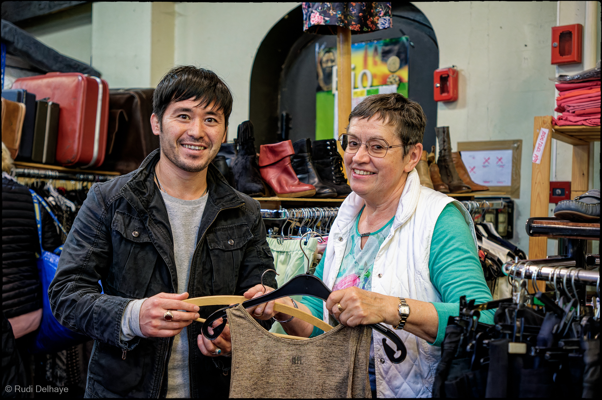
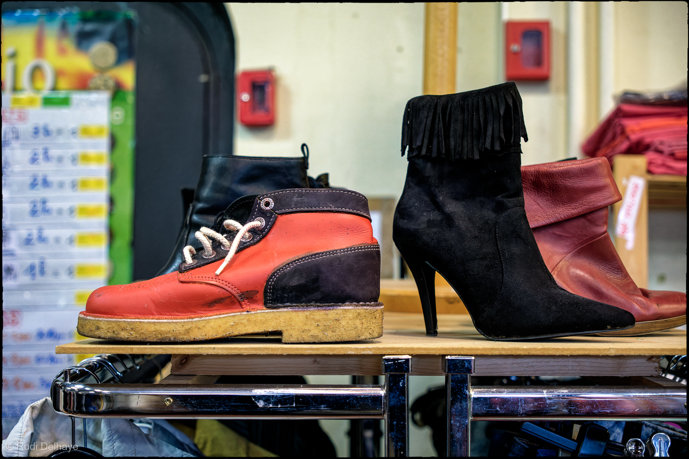
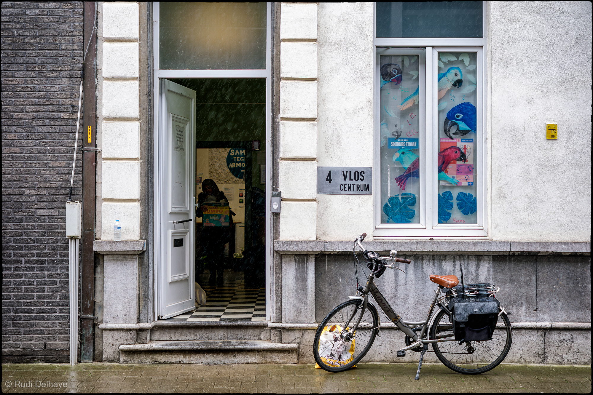

Kledij of huisraad binnenbrengen in de VLOS-bazar?

Heeft u kledij, huisraad of speelgoed dat nog in zeer goede staat is en dat u wil binnenbrengen in onze Bazar?
Dit kan op de volgende momenten:
maandag, dinsdag, woensdag & vrijdag
telkens van 9 tot 12 uur
Adres Aerschotstraat 37-39 (blauwe poort) 9100 Sint-Niklaas
Heeft u toch nog vragen?
Neem dan contact op via het algemene nummer:Tel 03 766 29 13
Zelf komen snuisteren in de VLOS-bazar?

Bij de VLOS-bazar kan je terecht om kleding, kleine huishoudtoestellen, speelgoed... uit te kiezen op de volgende momenten:
De opbrengsten hiervan worden gebruikt om voedsel aan te kopen voor onze VLOS-kruidenier.
dinsdag & vrijdag
telkens van 13u30 tot 16u30 uur
Op zoek naar hulp of advies?

Heb je een precaire verblijfsstatus en heb je hulp of advies nodig?
Dan ben je welkom in ons VLOS-centrum.
Maandag tot vrijdag
van 9u tot 16u
Adres Kasteelstraat 4 9100 Sint-Niklaas
info@vlos.be
Tel 03 766 29 13